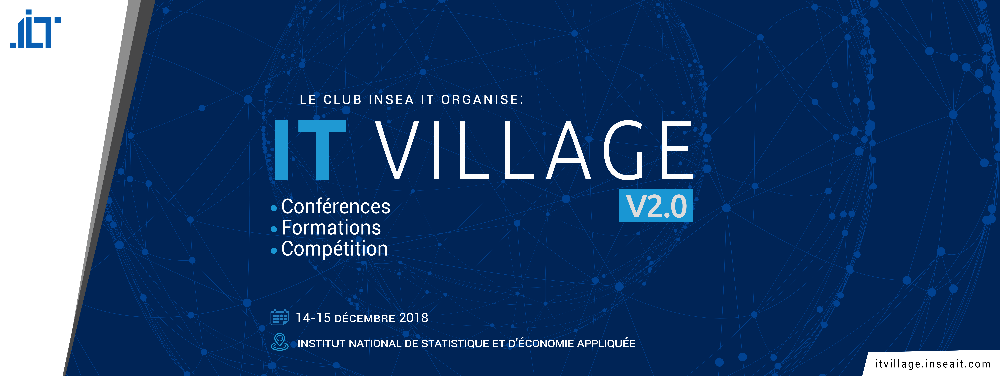

L’IT VILLAGE est un événement phare du club INSEA IT qui associe conférences, formations et compétitions. C’est aussi l’occasion de rencontrer les professionnels du monde de l’informatique ; un pur moment de partage et d’émotions ; le tout dans une ambiance zen et décontractée. J’ai eu la chance d’assister à l’éclosion de ce projet qui nous tenait et nous tiens à cœur au sein du club INSEA IT. Donner aux étudiants, aux professionnels et aux passionnés du domaine l’opportunité d’échanger entre eux, était notre objectif principal. C’est ainsi que l’IT VILLAGE a vu le jour, une belle matinée ensoleillée d’avril. Le thème de la première édition portait sur l’innovation digitale dans toutes ses formes. De la politique de digitalisation des services publiques avec M. Benayed, secrétaire général du commerce extérieur, à la Cyber Security avec M. Lekssays, expert en sécurité informatique. La première édition du IT VILLAGE compte également dans son bilan des formations notamment en BI, réseaux informatiques et initiation à la Cyber Security. Autant de sujets riches en contenu et qui donnent envie de se lancer dans le domaine. L’aboutissement de ce projet n’était pas sans embûches. Préparer un événement de cette envergure, avec tout ce qu’une première édition apporte comme imprévus, était un pari. Mais grâce au courage, à la persévérance et au soutien mutuel entre membres, ce fut un pari réussi. Cependant, on a connu tous un moment de doute, de découragement ou de fatigue. Pour ma part, comme je devais monter sur scène, j’appréhendais énormément le jour j : serais-je à la hauteur ? l’événement sera-t-il une réussite ou un échec ? Avais-je réellement ma place dans ce monde de geeks, moi simple amatrice, dont la spécialité était différente ? La fin de l’événement marqua aussi la fin de mes peurs. J’avais trouvé ma place dans l’IT famille. En effet, l’IT VILLAGE m’a permis de découvrir de nouveaux horizons. J’ai élargi mes connaissances concernant l’IT en général et l’innovation digitale en particulier. Mais le plus important, j’ai réussi à dépasser mes limites et à me faire de nouveaux amis. Faire partie d’un club comme INSEA IT est très bénéfique, mais participer à l’organisation d’un événement comme l’IT VILLAGE est une expérience inoubliable. L’IT VILLAGE naquit du rêve commun des membres d’INSEA IT, qui croyaient fermement aux concepts de partage et d’entraide et qui firent tout leur possible pour le réaliser. Le reste de l’histoire vous le connaissez.
L’IT VILLAGE V2.0 nous donne rendez-vous cette année le 14 et 15 décembre à l’INSEA. Cette fois-ci, tout tournera autour de l’AI. Cette 2ème édition se veut plus enrichissante que jamais avec une équipe qui promet de donner tout ce qu’elle a. Le meilleur reste donc à venir. En attendant de vous avoir parmi nous, n’oubliez jamais,
" Croyez en vos rêves et ils se réaliseront peut-être. Croyez en vous et ils se réaliseront sûrement " Martin Luther KingPour plus d'informations sur l'event : IT village 2.0